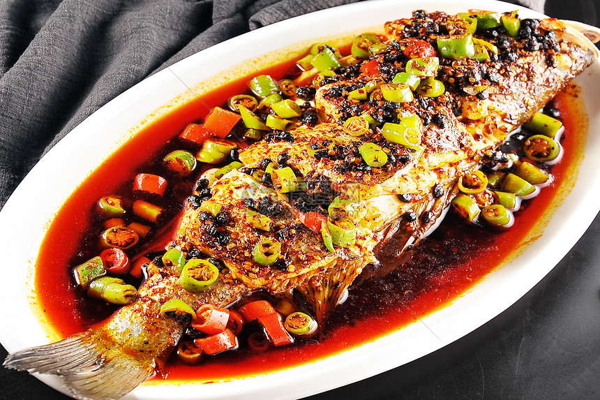

臭鳜鱼
臭鳜鱼是徽菜经典名菜，闻着臭吃着香，鱼肉鲜嫩，风味独特。 选用新鲜鳜鱼，通过特殊腌制工艺发酵，再配以徽州特色调料烹制而成。 这道菜体现了徽菜"重油、重色、重火功"的特点，是徽州地区的传统美食。
咸鲜
微辣
醇香
蒜香
辣度:
3-5
腌制时间(天)
30
烹饪时间(分钟)
2-3
份量(人)
独特发酵工艺
臭鳜鱼的独特风味来自于传统的腌制工艺。新鲜鳜鱼经过清洗处理后，用淡盐水腌制，在25°C左右的环境中发酵3-5天。这个过程会产生特殊的氨基酸和风味物质，形成"闻起来臭，吃起来香"的独特口感。
主要食材
- 新鲜鳜鱼 1条(约600克)
- 徽州臭豆腐 100克
- 猪肉末 50克
- 辣椒酱 2汤匙
- 生姜 1块
- 大蒜 5瓣
- 青蒜 2根
- 料酒 2汤匙
- 生抽 1汤匙
- 老抽 1茶匙
- 白糖 1茶匙
- 食用油 适量
- 盐 适量
营养成分（每100克）
- 热量：145千卡
- 蛋白质：18.5克
- 脂肪：7.2克
- 碳水化合物：2.8克
- 纤维素：0.5克
- 钠：480毫克
详细做法步骤
- 将新鲜鳜鱼去鳞、去鳃、去内脏，清洗干净，在鱼身两侧划几刀。
- 用适量盐均匀涂抹鱼身内外，放入容器中，覆盖保鲜膜。
- 在25°C左右的环境中腌制3-5天，直到鱼身散发出特殊气味。
- 腌制好的臭鳜鱼取出，用清水冲洗干净，沥干水分。
- 生姜、大蒜切末，青蒜切段，臭豆腐捣成泥状备用。
- 热锅凉油，将臭鳜鱼放入锅中，两面煎至金黄色，捞出备用。
- 锅中留底油，放入猪肉末煸炒至变色，加入姜蒜末炒香。
- 加入辣椒酱和臭豆腐泥，小火炒出香味。
- 放入煎好的臭鳜鱼，加入料酒、生抽、老抽、白糖和适量清水。
- 大火烧开后转小火，炖煮15-20分钟，让鱼肉充分吸收汤汁。
- 最后加入青蒜段，大火收汁，待汤汁浓稠即可出锅。
烹饪小贴士
- 选择新鲜的鳜鱼，鱼眼清澈、鱼鳃鲜红为佳
- 腌制时间和温度要控制好，温度过高容易变质，温度过低发酵不足
- 腌制过程中不要频繁打开容器，以免影响发酵
- 煎鱼时先热锅再放油，可以防止鱼皮粘锅
- 炖煮时火候要控制好，小火慢炖能使鱼肉更加入味
- 臭豆腐是提升风味的关键，不可省略
- 根据个人口味调整辣椒酱的用量
- 正宗的臭鳜鱼应该肉质紧实，蒜瓣状，口感鲜嫩
历史与文化
臭鳜鱼是徽州地区的传统名菜，已有200多年的历史。相传在古代，徽商外出经商时，为了保存鳜鱼，采用腌制的方法。经过发酵的鳜鱼虽然闻起来有特殊气味，但烹饪后却异常鲜美，于是逐渐形成了这道特色菜肴。
臭鳜鱼体现了徽菜"轻度腐败、严苛烹饪"的特点，通过特殊的加工工艺，将普通的食材转化为风味独特的美食。这道菜不仅是徽菜的代表，也是徽州饮食文化的体现。
食用建议
臭鳜鱼最适合搭配米饭食用，浓郁的汤汁可以拌饭，令人食欲大开。同时可以搭配一些清淡的蔬菜，如清炒时蔬或凉拌菜，以平衡口感。
在饮品方面，建议搭配绿茶或轻度的黄酒，可以中和鱼的油腻感，提升整体用餐体验。